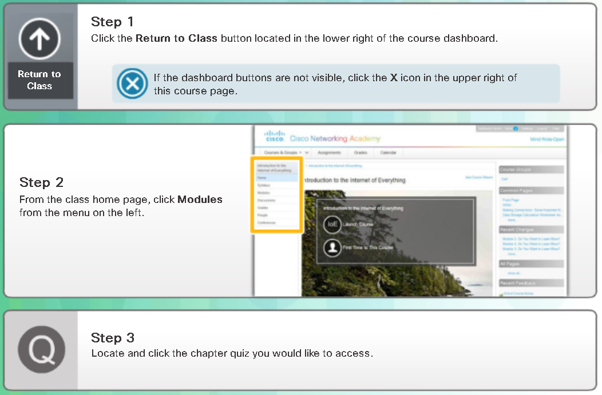

Packet Tracer Usage.
In this chapter, you are introduced to the Physical view. This mode allows you to place a logical network topology into a physical context. Packet Tracer creates various file types. The file types are introduced in this chapter and we also discuss how Packet Tracer is used as an assessment tool.
The Packet Tracer Physical View.
Now that you know the porpouse and the use of the menus in the logical workspace, we will move on to learn about the physical workspace in Packet Tracer. The default view for Packet Tracer is Logical,
which is equivalent to creating a logical diagram for the network. The other type of diagram used in networking is the physical diagram which not only shows the relationships of the network devices but
also applies building and distance factors in making the design.
Packet Tracer has the physical workspace that allows you to make your network more realistic by adding backgrounds, buildings and wiring closets (Armarios de cableado). These features are important
for documentation, design and visualization.. You can see the actual layout of the network within a room or a building. This provides valuable information into the flow of traffic and the suitability (Idoneidad)
and placement of equipment. The Physical view also has a great feature that shows the wireless coverage areas based on your equpiment placement within buildings.
In this section, you will learn to:
- Navigate the physical workspace.
- Add cities, corporate offices and branch offices.
- Add backgrounds into the cities and offices.
- Add wiring closets to the offices.
- Place networking devices into racks within the closets.
When the Physical view is shown, the basic organizational scheme is the following:
- intercity
- city
- building
- wiring closet
Packet Tracer - Packet Tracer Physical View.
You will explore the capabilities of Packet Tracer Physical view.
Packet Tracer Physical View Instructions.
Packet Tracer File Type.
Packet Tracer has the ability to create three different types of files. These file types are used for different purposes and include: .pkt, .pkz and .pka.
The .pkt file is used when a simulated network is built in Packet Tracer and saved. The .pkt file can also have backgrounds embedded within it.
The .pkz file type is not used very often. It is a compressed file that allows the inclusion of other file, such as .pdf files, along with the Packet Tracer files.
The .pka file type is a Packet Tracer Activity file. This file type contains a Packet Tracer activity plus an instruction window. The instructions provide a walkthrough of the necessary processes required to complete the activity, assigment or
assessment. The instruction window also contains a completions percentage to track how much of the activity has been successfully completed. There is also a Check Results feature that can be configured to provide feedback.
Packet Tracer Assessment Types.
Packet Tracer is used in the Networking Academy to assist in the design, creation and testing of networks and network applications. Packet Tracer is also used for purposes of self-evaluation, practice and formal assessment. This section will
display and discuss PTSAs and PTMOs.
A PTMO (Packet Tracer as a Media Object) is an assessment item where a Packet Tracer Activity is part of the assessment item. Once the .pka is loaded, the student is provided with a small set of instructions to be completed. Once completed, they are able to return to the
item to answer the question based on their work. PTMOs can be used by themselves or as an item on a quiz or final exam.
A PTSA (Packet Tracer Skills Assessment) is udes as a standalone skills-based assessment complete with a full set of instructions. Stundest are requierd to build, modify and/or troubleshoot a network. PTSAs are often done in a timed environment. Once the student has completed
the activity, they submit their work to netcad.com. Some PTSAs are configured to allow students to save their work and continue at a later time.
Once a PTSA has been completed, the student will receive their score plus item level feedback. They also see a list of objectives of the PTSA along with information about waht they did right and what they did wrong. All forms of feedback are intended to assist the
student to improve their skills.
Chapter 4. Packet Tracer Usage.
At the completion of this chapter, you should be able to:
- Investigate the Packet Tracer Physical View.
- Explain Packet Tracer File and Assessment types.
Packet Tracer Basic Quiz
Return to the Modules section of your class to complete the Packet Tracer Basic Quiz. 